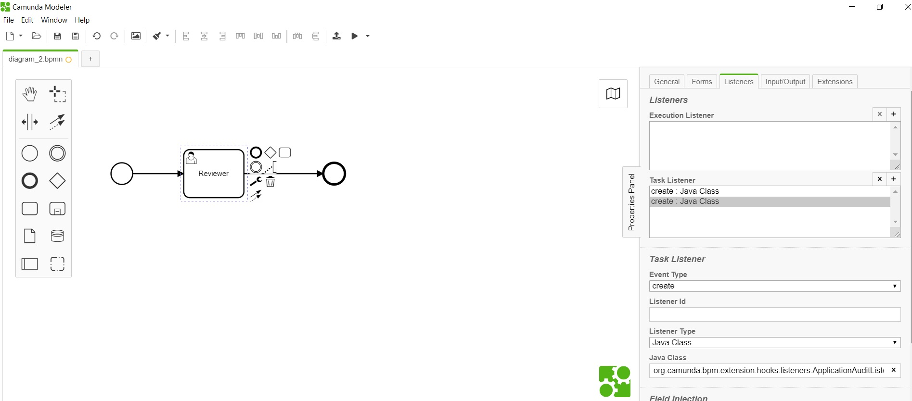

<article class="docs-article">
    <section class="docs-section" id="listeners">
        <div>
            <h2 id="application-audit-listener">Application Audit Listener</h2>
            <p><strong>org.camunda.bpm.extension.hooks.listeners.ApplicationAuditListener</strong>
            </p>
            <p>This component can be used on any event of task or execution. Upon configuration,
                this send value
                from cam variables: &quot;applicationStatus&quot; and &quot;formUrl&quot; to
                formsflow.ai system for
                capturing audit.</p>
            <p>NOTE: To be used, only when an audit i.e. history to be created without updating the
                application
                status.</p>
            <h3 id="table-of-content">Table of Contents</h3>
            <ul>
                <li><a href="#type">Type</a></li>
                <li><a href="#how-it-works">How it Works</a></li>
                <li><a href="#how-to-use">How to Use</a></li>
            </ul>
            <h4 id="type">Type</h4>
            <p>Task/Execution Listener</p>
            <h4 id="how-it-works">How it Works</h4>
            <p>This invokes the REST endpoint of application history
                <strong>application/{id}/history</strong> with
                data from cam variables: &quot;applicationStatus&quot; and &quot;formUrl&quot;.
            </p>
            <p>The component is dependent on listed variables from camunda context,</p>
            <ol>
                <li>applicationId </li>
                <li>applicationStatus</li>
                <li>formUrl</li>
            </ol>
            <h4 id="how-to-use">How to Use</h4>
            <p>Below snapshot shows how to configure the <strong>ApplicationAuditListener</strong>
                to a task. </p>
            <p>
                <br><br>
                Click here to know about <a href="application State Listener.html">Application State
                    Listener</a>

            </p>

        </div>
        </section>
        </article>